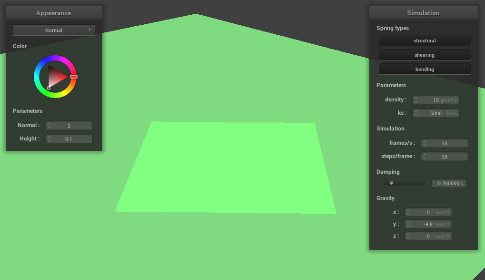

In this project I implemented a variety of features to enable cloth simulation.
In this part, I constructed a sheet of point masses and springs. The grid is made out of num_width_points and num_height_points. The main difficulty in this section was getting a small random offset for the z coordinate of the point mass position if the orientation of the cloth is VERTICAL. I used std::uniform_real_distribution and std::default_random_engine. However, I didn't realize I needed to seed the random number generator, so for a while I was getting all the same z values which caused my cloth to stand straight up in Part 4. I also had to flip the order of my for loops to make sure I was storing the point masses in row-major order. Then, I added 3 types of springs to the grid.
1. Structural constraints, which are between a point mass and the point mass to its left and the point mass above it.
2. Shearing constraints, which are between a point mass and the point mass to its diagonal upper left as well as the point mass to its diagonal upper right.
3. Bending constraints, which are between a point mass and the point mass two away to its left as well as the point mass two above it.
The main difficulty in creating the springs was handling the edge cases. For example, all point passes with x = 0 (the ones on the left edge) do not have a structural constraint with a point mass to their left because they are the furthest left. Similar cases needed to be handled for shearing and bending constraints.

For this task, I implemented simulation of the forces on the point masses to show their movement at each time step. First, I computed a total external force acting on each point mass. This was done by summing all the external_accelerations and multiplying it by the given mass. Then, I applied spring correction forces. For each type of constraint, if the constraint was enabled, I used Hooke's law to get the force appied to the two point masses on either end of the spring.
For bending constraints, I multiplied ks by 0.2 to make it weaker than structural and shearing constraints.
Then, I used Verlet integration to compute each point mass's new location.
Here is the result of sphere.json in its final resting state, with default parameters density = 15 g/cm^2 and ks = 5000 N/m.
With a smaller ks, 500 N/m compared to the default 5000 N/m, and holding density at the same value, the cloth falls onto the sphere tighter, as if stretching more. The edges of the cloth also fall further down. The resulting folds are slimmer and begin further down the sphere; the top is smooth.
With a higher ks, 10,000 N/m compared to the default 5000 N/m, and holding density at the same value, the cloth falls onto the sphere slower and with larger creases appearing earlier on. The cloth ends up look more stiff and the edges stick out. In addition, the creases are larger and extend further up the sphere.
With a lower density, at 5 g/cm^2 compared to the default 15 g/cm^2, the cloth seems to rest lighter on the sphere, not stretching tight over the shape. The result looks remarkably similar to the high ks/default density simulation, with large folds that extend to the top of the sphere.
With a higher density, at 30 g/cm^2 compared to the default 15 g/cm^2, the cloth falls faster and smoother over the top of the shape. The edges of the cloth also finish hanging more straight down. The resulting folds are tighter.
With a higher damping percentage, 0.5% compared to 0.2%, the cloth falls slowly. As the cloth begins to fall on the sphere, ripples appear throughout the cloth. The edges of the cloth fall slowly, as if being lifted up by wind. I didn't include images as the final result and intermediate results look similar, but it just takes longer for the simulation to reach a resting state.
With a lower damping percentage, 0.08% compared to 0.2%, the cloth falls much faster. The cloth comes to rest much faster as well. This is because a lower damping value allows the position to change more at each time step.
Here is scene/pinned4.json in its final resting state.
For this task, I implemented support for cloth collisions with other objects. To to this, I implemented Sphere::collide, which checks if a point mass is inside the sphere by checking if the distance from the center of the sphere to the point mass is less than the radius of the sphere. If so, the point mass is "bumped" to the point on surface of the sphere that is closest to where the point is. This is done by applying a correction vector. I also implemented Plane::collide, which checks if a point has passed through the plane. If so, it "bumps" the plane to the other side, e.g the side it originated from. This is done by the line equation test from Lecture 2. I check if the point mass has passed through the plane by checking if the dot product of the vector between the current position and the plane normal has a different sign than the dot product of the vector between the last position and the plane normal. If so, the correction needs to be applied, in the right direction.
I had a lot of trouble getting the correct correction vector for this part. Some changes I needed to make was using unit vectors for directions. I also needed to multiply the SURFACE_OFFSET by the normal and the distance between the last position of the point mass and the tangent point, as suggested on Piazza. My correction was the dot product of the vector between the tangent point and the point mass's last position and the scaled SURFACE_OFFSET (in the right direction).
Then within Cloth::simulate, I check if every point mass in the grid has a collision with every possible object.
(Sorry for the redundancy in the next 2 descriptions, I used the sphere for my part 2 examples because it didn't say explicitly which scene to use.) Here is the result of sphere.json in its final resting state, with default parameters density = 15 g/cm^2 and ks = 5000 N/m.
With a smaller ks, 500 N/m compared to the default 5000 N/m, and holding density at the same value, the cloth falls onto the sphere tighter, as if stretching more. The edges of the cloth also fall further down. The resulting folds are slimmer and begin further down the sphere; the top is smooth.
With a much higher ks, 50000 N/m compared to the default 5000 N/m, and holding density at the same value, the cloth falls onto the sphere very loosely. The cloth edges are stiff and less wavy and the resulting folds are very large and extend from the top of the sphere.
Here is the cloth lying on the plane.

For this task, I implemented support for self collisions using spatial hashing. To do this I wrote a function Cloth::hash_position that takes a point masses position and maps it to a float, or key, that represents a specific 3D box volume. This key is then used as the unique key in our hash map. I loop over all the point masses in Cloth::build_spatial_map and put them into the hashmap using the Cloth::hash_position method. Then in Cloth::self_collide, I look up a specific point mass in the hashmap and check if it is within 2 * thickness distance apart from the other point masses in that hashmap entry. If not, I compute a correction vector that can be applied to that the point mass such that it is 2 * thickness distance away from the other point mass. In the end, I average all these corrections and scale it down by simulation_steps. Then in Cloth::simulate, I call self_collide on each PointMass.
For this part, the main difficulties I had were not checking if the point mass was being compared to itself, and also accidentally checking if the distance was greater than 2 * thickness, rather than less.
Here is the cloth falling on itself with default parameters density = 15 g/cm^2 and ks = 5000 N/m.
High spring constant: Here is the cloth falling on itself with default density = 15 g/cm^2 but high ks = 10,000 N/m. The cloth creates neat folds and as it is falling, the cloth itself has larger waves in it compared to the default.
High density: Here is the cloth falling on itself with high density = 100 g/cm^2 and default ks = 5000 N/m. The cloth crumples tighter and creates smaller folds.
Low density: Here is the cloth falling on itself with low density = 15 g/cm^2 and default ks = 5000 N/m. The cloth creates larger and smoother folds
For this task, I implemented shaders which take in an input and output 4d vectors which speed up the graphics pipeline. Two types of OpenGL shader types are vertex shaders and fragment shaders. Vertex shaders transform vertices, the results which can then be used as input to fragment shaders. Fragment shaders take in geometric attributes and output a color.
Blinn-Phong shading: Blinn-Phong Shading extends diffuse shading by adding an ambient light and specular reflecton component. This creates a more realistic shading effect.
Blinn-Phong shader with only the ambient component.
Blinn-Phong shader with only the diffuse component.
Blinn-Phong shader with only the specular component.
Entire Blinn-Phong model.
Custom texture. This was an image of the sea.
I was not able to finish bump mapping.
Mirror shader, showing the cloth and the cloth on the sphere.